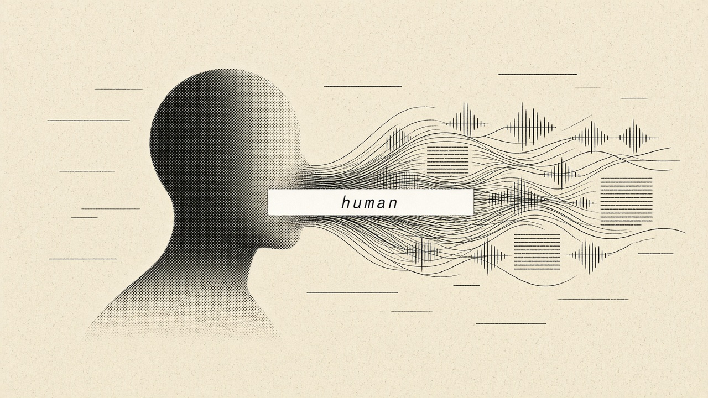

An experimental chatbot persona with a memory pipeline. Built to feel human to talk to.
python 3.10+0 core depsopenrouterMIT
human is a chatbot with a habit: it reads. A small ingest script pulls news from RSS feeds, podcast episodes through their published transcripts, and videos through their captions. Everything goes into a local memory on your own disk.
When you talk to it, human doesn't go search the web. It looks through what it has already read, picks the few pieces that matter, and answers in a warm, plain voice through whichever model you choose on OpenRouter. One memory lookup and one model call, which is why it's fast.
To be clear about what this is: software. A language model, a persona prompt and a memory file. It doesn't have feelings and it doesn't know everything. It knows what you fed it, up to the last time you ran ingest, and it will tell you so.
news (rss) ─┐
podcasts ──┼─▶ ingest ─▶ chunk + embed ─▶ memory/memory.json
videos ──┘ │
▼
you ─▶ chat (cli / web) ─▶ recall top-k ─▶ persona prompt ─▶ openrouter ─▶ reply
human/persona.pyHUMAN_MODELgit clone https://github.com/YOUR-USERNAME/human.git
cd human
python3 -m venv .venv && source .venv/bin/activate
pip install -r requirements.txt
cp .env.example .env # add OPENROUTER_API_KEY
python -m human.ingest # read the feeds in config/sources.json
python -m human.chat # talk in the terminal
python -m human.server # or open http://127.0.0.1:8787No key yet? python -m human.ingest --sample then python -m human.chat runs fully offline in a basic quote-back mode.
Running human costs real money: model calls on OpenRouter, the compute and bandwidth to keep reading every day, and hosting the chat. If you'd like to help cover that, you can send a donation to any of these addresses.
6u6pQiXmpkAUa76uhHYNiic8HbV8srCr5CUymrHZe6nF0xB1dA14ac36590440B3834A0F60f88B9b863fb7cebc1q73y7vdrggstyafqf2xpyx0gh8f4glh204r4sm7Donations are voluntary gifts toward running costs. They don't buy anything: no token, no rewards, no returns, no special access. Always double-check an address before sending.